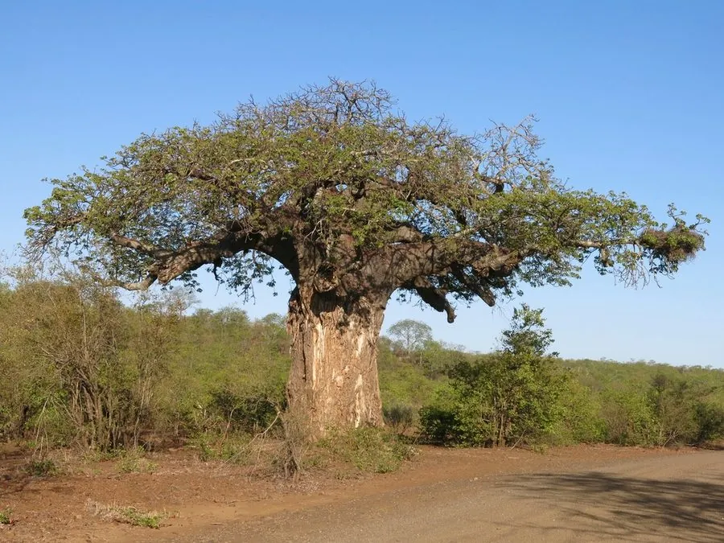

乔木 · 植物界
猴面包树 Adansonia digitata

非洲稀树草原上标志性的巨树，树干粗壮如瓶，能储存大量水分，寿命可达千年，被称为“生命之树”。
- 分类
- 门被子植物门纲木兰纲目锦葵目科锦葵科属猴面包树属
- 栖息环境
- 非洲热带稀树草原与干旱疏林，喜干热气候，耐长期干旱
- 地理分布
- 非洲撒哈拉以南的稀树草原地区，马达加斯加也有分布
- 保护级别
- 暂无评估；中国未列入国家重点保护野生植物名录
物种志
猴面包树为落叶乔木，高可达 20 m，树干异常粗壮，胸径可达 10 m 以上，常呈瓶状或水桶状，木质疏松多孔，可储存大量水分；树皮灰褐色而光滑。掌状复叶集生于枝顶，小叶 5–9 枚，落叶期叶片全部脱落，只剩光秃的枝干。花大而洁白，直径约 15 cm，夜间开放、散发腐香气味，由蝙蝠传粉；果实长椭圆形，长可达 30 cm，果肉干燥、富含维生素 C。
猴面包树分布于非洲撒哈拉以南的稀树草原及马达加斯加，喜干热气候，耐旱力极强，旱季靠树干储存的水分维持生命，可耐 40 ℃ 以上高温。树干木质疏松，是当地居民取水的来源之一；果实果肉可制饮料，种子可榨油，树皮纤维可制绳与织物，全树几乎都有用途。猴面包树寿命可达 2000 年，因树形奇特、生态价值高，被视为非洲草原的象征。
形态与习性
- 株高可达 20 m，胸径可达 10 m 以上
- 花期5–7 月，花朵夜间开放
- 果期8–10 月，果实长可达 30 cm
- 光照极喜光，不耐荫
- 水分极耐旱，年降水量 250–1000 mm
- 土壤排水良好的沙质土
- 主要用途果肉制饮料、种子榨油、树皮纤维制绳
趣味知识
- 猴面包树的树干可以储存数吨水，旱季成为当地人和野生动物重要的水源。
- 猴面包树的花在夜间开放，由蝙蝠传粉，果实成熟后悬挂枝头，形似绿色香肠。
- 一些猴面包树的树龄超过 2000 年，是世界上最古老的被子植物之一。
- 猴面包树果实的果肉富含维生素 C，是非洲当地的传统饮料原料。